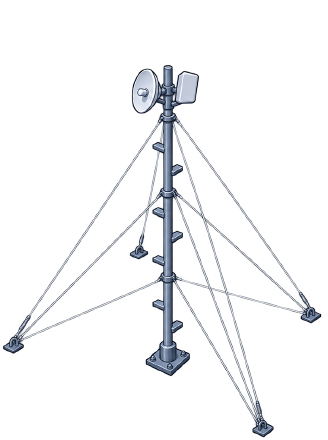
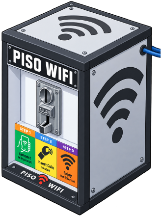

Full Set · pfSense + JetStream
Full Set · pfSense + JetStream
A network built for latency, not just speed.
For buildings, offices, homes, remote/mountain sites and small ISPs. Built on UnCGNAT, 802.1Q VLAN segmentation and FQ-CoDel SQM — the three things that separate a network that “has internet” from one that feels fast while everyone is on it.
← → to move · F fullscreen · L traffic-flow animation · switch tier in the top bar
Budget Set · One-box build
The same architecture for ₱5,000.
No rack, no managed switch. One GL-AX1800 doing UnCGNAT, VLAN segmentation, STP and FQ-CoDel SQM — remotely managed through GoodCloud. Running live today, not a proposal.
← → to move · F fullscreen · L traffic-flow animation · switch tier in the top bar
What we will walk through
Every section answers one question: what does this component do, and what breaks the day it is missing?

01 · The Build
- Where this applies
- Hardware roles and prices
- Live topologies + IP plans

02 · UnCGNAT
- What CGNAT actually is
- With vs without — side by side
- What stops working under it

03 · VLAN
- Managed switch vs flat network
- Broadcast domains & isolation
- Loop protection with STP

04 · FQ-CoDel
- Bufferbloat, explained simply
- Live traffic simulator
- Where the queue forms

05 · Dual WAN
- Why 2 ISPs made things worse
- The speed-test illusion
- What to do instead
06 · Money & Value
- PHP cost of each tier
- Which tier fits which site
- How to verify every claim
Where this design applies
The pillars are not a piso Wi-Fi trick. They are what any network needs once more than one person depends on it.
Office / building
- Tenants and departments on separate VLANs
- Guest Wi-Fi that cannot see the office LAN
- POS, CCTV and VoIP protected from downloads
- Remote access to the NVR without a relay cloud
Home / family
- Work calls survive someone else’s download
- Gaming ping stays flat at peak hours
- Smart devices on their own segment
- Open NAT for consoles and party chat
Remote / mountain ops
- Long point-to-point wireless links
- Site visits are expensive — remote management is the whole point
- UnCGNAT is what makes a remote console possible
- One VLAN down beats the whole site down
Small ISP / piso Wi-Fi
- Per-group isolation, policy and accounting
- Fair sharing so one downloader can’t starve the rest
- Vendo dashboards reachable remotely
- Fewer refunds and lag complaints
IP addressing plan
The VLAN ID is the third octet. VLAN 20 lives on 192.168.20.0/24, VLAN 30 on 192.168.30.0/24, and so on — read the address, know the segment. 154 DHCP leases per group, gateway always .1, .2–.99 held back for anything that must keep its address.
| Switch port | VLAN | Gateway | DHCP pool | Static reserve | Serves |
|---|---|---|---|---|---|
| Port 1 | VLAN 110 | 192.168.110.1 | .100 – .254 | .2 – .99 | P2P link 1 → group A |
| Port 2 | VLAN 20 | 192.168.20.1 | .100 – .254 | .2 – .99 | P2P link 2 → group B |
| Port 3 | VLAN 30 | 192.168.30.1 | .100 – .254 | .2 – .99 | P2P link 3 → group C |
| Port 4 | VLAN 40 | 192.168.40.1 | .100 – .254 | .2 – .99 | P2P link 4 → group D |
| Port 5 | VLAN 50 | 192.168.50.1 | .100 – .254 | .2 – .99 | P2P link 5 → 34-port fan-out |
| Uplink | Mgmt / LAN | 192.168.2.1 | — | pfSense LAN | Router, switch mgmt, monitoring |
Why the plan skips 192.168.10.0/24
The E314n Compass antennas ship with 192.168.10.1 as their factory gateway, and there are 200+ of them deployed on the vendo AP masts.
- Any segment numbered 192.168.10.x would collide the moment a unit is swapped in, reset, or arrives new from the box
- That collision is silent and intermittent — the worst kind to trace at night
- So VLAN 110 → 192.168.110.0/24 takes the first slot instead
- Everything else lines up on its own ID: 20, 30, 40, 50
What gets a static address — .2 – .99
Anything you port-forward to, monitor, bill, or need to find at 2 a.m. must not move when a lease expires.
- LiteBeam AC Gen2 radios — both ends of every P2P link
- Unmanaged edge switches and other infrastructure at the far end
- High-revenue piso Wi-Fi vendos — the units worth checking on directly
- PISONET café PCs — e.g. AP → Station → unmanaged switch on 192.168.20.0/24, every machine statically addressed
GL-AX1800 port & VLAN map
| Port | VLAN | Gateway | DHCP | Serves |
|---|---|---|---|---|
| WAN | SQM | FQ-CoDel · UnCGNAT done · CPE in router mode | ||
| Port 1 | VLAN 1 | 192.168.8.1 | Admin | Admin + monitoring |
| Port 2 | VLAN 20 | 192.168.20.1 | .100 – .253 | P2P link → group A |
| Port 3 | VLAN 30 | 192.168.30.1 | .100 – .253 | P2P link → group B |
| Port 4 | VLAN 40 | 192.168.40.1 | .100 – .253 | P2P link → group C |
| STP | Enabled — loop protection on every port | |||

Open items
- CPE left in router mode — settled — bridging is the property owner’s call and they decline it, so one extra NAT hop stays. UnCGNAT still delivers the public IP, and the site runs clean at 4,549 connections with load average 0.27
- VLAN 1 → VLAN 110 migration — moving admin off the default VLAN to 192.168.110.1 (.100–.253). Every unconfigured device lands on VLAN 1 by default; management should not live there
- Same numbering rule as Site 1 — VLAN ID is the third octet, and 192.168.10.0/24 is left free at both sites for the E314n antennas' factory gateway
One honest limitation
Software SQM costs CPU. This box shapes comfortably in the low hundreds of Mbps; on a 600 Mbps plan it becomes the ceiling before the fiber does. That is a fair trade at ₱5,000 — 250 Mbps with an A-grade ping beats 600 Mbps that stutters. If a site must deliver the full plan speed with shaping, that is the pfSense tier.
What this actually runs
Two production sites, one fiber line each, no load balancing. These are the numbers behind every claim in this deck.
Site 1 · Full set
- 70+ piso Wi-Fi vendos
- 50+ subscriber connections
- 200+ devices in the Omada client list
- ~10 APs / 14 stations across the point-to-point links
- One 34-port unmanaged switch fanning out VLAN 50
- 171 clients on the switch, measured off-peak — VLAN 50: 68 · VLAN 10: 41 · VLAN 30: 31 · VLAN 20: 20 · VLAN 40: 10, all wired
Site 2 · Budget set
- 8 piso Wi-Fi vendos
- 30+ subscriber connections
- 150 devices on a single ₱5,000 router
- Its own PLDT line — an entirely separate site, far from Site 1
- Running clean with no managed switch
- 4,549 active connections of 14,336 — read off the box itself: 2,702 on VLAN 20, 945 on VLAN 40, 436 on VLAN 30, at load average 0.27

The real total is higher
That 200+ counts only what the controller can see. It does not include:
- Phones and laptops connected through each vendo
- Devices behind a subscriber’s own router
- Sub-networks like 192.168.20.x, where a router feeds a point-to-multipoint AP serving four more stations

The mast
A single steel pole with rungs welded up the side, held by four levels of guy wires anchored in four directions. Somebody climbs it to mount and align the point-to-point radios at the top.
This is what carries the 8 km link — and why a site visit is a real cost, and remote management is worth paying for.

The revenue unit
Insert a coin, connect, browse. 70+ of these at Site 1 and 8 at Site 2, each one an endpoint at the far side of a wireless hop.
Every pillar in this deck exists so that the person standing in front of one of these gets a connection that works at 8 pm.
Four things doing the heavy lifting
Remove any one of them and the network still “works” — it just becomes the network everybody else has.
UnCGNAT
A real public IP instead of a shared carrier address.
Inbound works- Port forwarding, DDNS, CCTV, VPN, remote console
VLAN 802.1Q
Separate Layer-2 worlds on one physical switch.
Blast radius = 1 group- Storms, rogue DHCP and infections stay in their lane
FQ-CoDel SQM
Fair queuing + active queue management on the WAN.
Latency stays flat- One heavy downloader can no longer ruin everyone’s ping
One clean WAN
One line, one public IP, one queue that FQ-CoDel owns.
Sessions stay intact- The dual-WAN section explains why this matters more than it sounds
CGNAT — the invisible wall
IPv4 ran out. Carriers now put hundreds of customers behind one shared public address (100.64.0.0/10). Traffic can go out, but nothing from the internet can ever start a connection in.
Behind CGNAT you lose
- Port forwarding — dead. There is no port to forward from
- CCTV / NVR remote viewing — only via a third-party relay cloud
- DDNS — resolves to the carrier’s shared IP, not to you
- Self-hosted VPN back to site — no inbound listener possible
- Game hosting & NAT type — Strict / Type 3, P2P matchmaking suffers
- Remote router console — you must drive to the site
- Shared-IP reputation — someone else’s abuse gets you CAPTCHA’d or blocked

With UnCGNAT you get back
- A routable public IP terminating on your router
- Inbound services — NVR, VPN, web, remote desktop, game host
- Clean NAT traversal — Open/Moderate NAT, working UPnP, fewer relayed calls
- Real remote management — fix a site from your phone at 2 a.m.
- Fewer NAT layers = fewer broken protocols, lower per-packet overhead
- Costs ₱0 — it is a request to the ISP, not hardware
What happens without VLANs
Replace the managed switch with a dumb one and every device — every tenant, every guest, every vendo, the admin PC — lands in one flat broadcast domain. Everyone hears everyone.
Failure modes of a flat network
- Rogue DHCP — one mis-set device hands out wrong gateways to the entire site
- Broadcast / ARP storms — chatty devices burn airtime on every link at once
- Lateral movement — one infected machine can scan and reach all others
- MAC table pressure — cheap switches flood when the table overflows
- No blame isolation — “who is flooding?” has no fast answer
What VLANs buy
- Contained blast radius — a storm dies inside its own /24
- Privacy — group A literally cannot see group B’s devices
- Per-group policy — separate firewall rules, bandwidth caps, captive portals
- Per-group accounting — usage per tenant, for billing or disputes
- Surgical troubleshooting — scoped to one tag, not the whole site
Plus STP
- Spanning Tree is enabled on both sites
- Someone patches a cable back into the same switch → the loop is blocked, not amplified
- On a flat unmanaged network that same mistake takes down everything, instantly
Anti-loopback — the feature that pays for the box
Clients are not network engineers, and on a mountain site they should not have to be. The question is never whether someone plugs the wrong thing into the wrong port — it is what happens to everyone else when they do.

Real incidents — all of them survivable now
- Client factory-resets their router — DHCP switches back on and it starts handing out 192.168.1.1 to everyone
- WAN cable moved into a LAN port — instant loop
- A modem plugged in as a “router” — the client cannot tell them apart, and now there are two DHCP servers
- Client adds their own router, unconfigured, gateway clashing with the main network
- Lightning or a power surge resets a LiteBeam, an AP or a vendo back to factory defaults
- An ISP modem running as an AP — DHCP switched off by hand — resets itself and becomes a router again
What each mechanism actually stops
- STP — catches the physical loop and blocks that port, typically within a second. This is the “anti-loopback” doing the heavy lifting
- VLAN — a rogue DHCP server can only poison its own segment, never the whole site
- Router-owned DHCP — the correct server sits upstream and stays authoritative for every VLAN
- Distinct gateway — 192.168.2.1 and 192.168.8.1 never collide with a factory-default device
- Remote console — you can see which port went down without driving there
Standard practice on these sites
- Spare ISP modems are repurposed as plain APs with DHCP off, or as dumb switches — never as a second router
- They still reset themselves after a surge, which is exactly why the upstream protection has to exist
- STP enabled on every port at both sites, not only the uplinks
- Every segment on its own VLAN, so the blast radius is one group
FQ-CoDel — why the ping stays low
Bufferbloat is why a 600 Mbps line can still “feel laggy”. Routers ship with oversized dumb buffers: when the link fills, packets are not dropped — they are stored. Your game packet queues behind half a second of somebody’s download.
FQ — Fair Queuing
Traffic is hashed into ~1024 independent flow queues and served round-robin. A single 40-connection torrent no longer outvotes a one-connection voice call. New / sparse flows get served first — which is exactly what interactive traffic is.
CoDel — Controlled Delay
Measures how long each packet sat in the queue. If the minimum stays above target 5 ms for interval 100 ms, it starts dropping or ECN-marking. TCP reads that as “slow down”, and the queue drains itself.
SQM — own the bottleneck
Shape at roughly 85–95 % of measured line rate so the queue forms inside your router where FQ-CoDel controls it — instead of inside the ISP modem where you have zero control. Trade a slice of peak throughput for a 10–40× latency improvement.
Configuration on a 600 Mbps line
Same load. Same line. Different queue.
Both lanes receive identical traffic: one bulk download saturating the link, plus one interactive flow (game / voice / Zoom). Watch what the queue does to the interactive packets.
Without FQ-CoDel — single FIFO buffer
- One queue, first-in-first-out, huge buffer
- Interactive packets wait behind the entire download
- Call stutters, game rubber-bands, page loads crawl
With FQ-CoDel — per-flow queues + AQM
- Separate queue per flow, sparse flow served first
- CoDel drops from the bulk queue to keep delay near target
- Download still runs at full speed — it just waits its turn
Where the queue actually forms
Same physical path. The only difference is which device holds the packets when the link is full — and whether that device is smart about it.
| Scenario · link fully saturated | Idle ping | Ping under load | Jitter | Voice / game / meet | Bufferbloat grade |
|---|---|---|---|---|---|
| Dumb FIFO — typical ISP router | 18 ms | 300 – 1,500 ms | high | Unusable while anyone downloads | D / F |
| Basic rate limit, no AQM | 18 ms | 120 – 400 ms | medium | Noticeably degraded | C |
| FQ-CoDel SQM — this build | 18 ms | 20 – 40 ms | low | No perceptible change | A / A+ |
Measured — off-peak
Measured — peak, 6 pm – 10 pm
User-visible problems
The table’s ranges are typical published results for FQ-CoDel on shaped consumer links. The three figures above are the real results from Site 1 and Site 2. A grade easing from A+ to B+ at peak is the shaper working harder on a busier line — still an order of magnitude better than the D or F an unshaped connection returns, and no user reports a difference.
Two ISPs into one router — why it went wrong
This was tested in production on a live site: two lines into one router, load balanced. The speed test looked incredible. Everything else got worse.
What actually happened
- Banking and e-wallet apps refused to work — GCash and similar would not open, or logged out mid-transaction
- “Turn off your VPN” warnings on sites nobody was VPN-ing into
- Frequent timeouts, and some sites simply unreachable
- Sudden disconnects in the middle of a page or a session
- Games lagging and dropping — the exact thing the network was built to prevent
- Daily complaints from clients and from the coin-operated units
The speed-test illusion
The test showed 800–900 Mbps. That number is real and completely useless: modern speed tests open many parallel connections, and the balancer spread them across both lines — so the tool simply added the two lines together.
A single download, a single video stream, a single game never exceeds one line’s speed. Two 600 Mbps lines do not make a 1.2 Gbps connection — they make two 600 Mbps connections that a speed test can add up and a human never can.
Why load balancing breaks the modern web
Every symptom on the previous slide traces to one fact: your public IP changed in the middle of a session.
Sessions are bound to an IP
- You log in and the server issues a session token tied to IP A
- Your next click leaves via the other WAN as IP B
- The server sees the same token from a different address and treats it as session hijacking — logout, re-auth, or a hard block
- Banks and e-wallets are the strictest about this by design. That is why they broke first
Anti-fraud reads it as a VPN
- Rapid IP hopping is the exact fingerprint of a proxy or VPN
- Fraud and bot-detection systems respond with CAPTCHAs, blocks, or the “please turn off your VPN” notice
- Two different carriers is worse — different networks, sometimes different geolocation, so the site sees you jump city mid-session
- CDNs and streaming services apply the same logic
Long-lived flows get cut
- Games hold a UDP flow open for the whole match; move it to another WAN and the NAT mapping changes → disconnect or rubber-band
- Voice and video calls behave the same way
- TLS session resumption fails, so pages re-handshake and feel slow
- Large downloads stall or restart
It also breaks FQ-CoDel
SQM works by owning the single bottleneck. Split traffic across two WANs and neither queue is authoritative — the shaper can no longer tell how full the real path is. The latency control you paid for degrades exactly when the network is busy. Add CGNAT on either line and it compounds.
Would PLDT + Globe or PLDT + Converge behave differently?
No — expect the same or worse. The problem is the balancing method, not the carrier. Mixing two different networks means two different address blocks and often two different apparent locations, which makes the IP-hopping fingerprint more obvious to anti-fraud systems, not less.
If you really need a second line
A second WAN is not forbidden — splitting one user’s traffic across both is. Pick one of these instead.
- One line carries everything; the second sits idle until the first dies
- Every session keeps one stable public IP — banking, games and logins behave normally
- FQ-CoDel still owns exactly one queue, so latency control is intact
- Sessions only break during an actual outage — which is the point of redundancy
- Policy routing: VLAN 20/30 always exit ISP A, VLAN 40/50 always exit ISP B
- Each client keeps one consistent public IP — no mid-session hopping
- The site really does use both lines, so total capacity doubles
- Shape each WAN with its own FQ-CoDel instance — both queues stay authoritative
Option 3 — one bigger plan
Usually the cheapest answer once you count the second line’s monthly fee plus the support hours the complaints generate. One fat, clean, shaped line beats two split ones for almost every workload.
If you must load balance
- Turn on sticky / source-IP persistence so one client stays on one WAN
- Exclude banking, auth and game destinations from balancing entirely
- Expect it to reduce, not eliminate, the problem
Rule of thumb
One user’s session must always leave through the same door. Redundancy at the site level is good. Redundancy inside a single conversation is what breaks the internet for that user.
What the market actually does
Operators nearby run three, sometimes five ISP lines into one router and call it “combined”. A single ₱1,899 line looks like an underspend next to that, and it gets treated that way.
- The speed test on those setups genuinely reads higher — that is the number being sold
- But on survey visits, their own users describe the same failures listed two slides back: apps that will not open, sessions dropping, games unplayable
- More lines multiply the IP-hopping problem instead of solving it
Why one line still wins
- One public IP — every session leaves through the same door, so nothing breaks mid-transaction
- One bottleneck — FQ-CoDel can actually own it, which is where the A+ grade comes from
- One bill — ₱1,899 a month against three or five
- Fewer support calls — the failures on the left simply do not happen here
What the usual setup looks like
No pfSense. No GL-AX1800. No managed switch. Just routers plugged into routers — the most common build in the field, and the one every complaint comes from.
Default gateways — why these builds collide
| Device | Default gateway out of the box | What that causes |
|---|---|---|
| PLDT modem | 192.168.1.1 | The address every other box has to stay away from |
| Most consumer routers | 192.168.0.1 | Usually survivable — a second private network behind the first |
| Some routers (e.g. Mercusys) | 192.168.1.1 | Direct clash with the PLDT modem |
| E314n Compass antenna | 192.168.10.1 | Why 192.168.10.0/24 is reserved and never used as a segment |
| GL.iNet GL-AX1800 | 192.168.8.1 | Off on its own — collides with nothing above |
| pfSense, as configured here | 192.168.2.1 | Deliberately chosen to sit clear of every factory default |
Why this chain hurts
- CGNAT + NAT + NAT + NAT — every layer rewrites headers, breaks NAT traversal and adds a state table that can fill up
- No FQ-CoDel anywhere — no box in the chain can shape, so the queue lands in the ISP modem
- Unmanaged switch — no VLANs, no STP, no port isolation, one loop kills the site
- Double DHCP — overlapping
192.168.1.0/24on both sides of the link - No remote access — every fix is a site visit
- No visibility — nobody can prove whose traffic caused the outage
What the end user reports
- “Speed test is 600 Mbps but the game lags”
- “Zoom keeps freezing when someone downloads”
- “The Wi-Fi hangs at peak hours”
- “CCTV app cannot connect from outside”
- “It fixes itself if I reboot” — that is the NAT state table clearing
What the ₱16,000 difference buys
| Budget set — ₱5,000 | Full set — ₱21,000 | |
|---|---|---|
| VLAN-capable ports | 4 LAN ports — the one real limit | 8 gigabit + 2 SFP — 6 in use, room to grow |
| Wi-Fi in the box | Built in — dual-band AX1800, and you can administer it over its own Wi-Fi | None — pfSense has no radio; budget a separate access point |
| Running out of ports | Hang an unmanaged switch off a LAN port — cheap, but everything behind it sits in that one VLAN. A managed switch brings the tagged ports back | Add ports on the managed switch — each one can carry any VLAN you like |
| Shaped throughput | comfortable at this site’s real load — the SQM ceiling is CPU-bound; set it from a speed test | full plan speed with SQM on, plus headroom above it |
| Firewall | Solid basics | Full rule sets, aliases, schedules, IDS/IPS capable |
| VPN | Light WireGuard use | Site-to-site, many peers, always on |
| If a box dies | One box = everything — it takes routing, switching and Wi-Fi with it | Router and switch fail separately — one failure is half an outage |
| Visibility | GoodCloud basics | Per-interface graphs, state tables, full logs |
| Scaling | Fine to ~4 segments — what runs out is ports and VLANs, not client capacity | Add VLANs freely; cost per segment keeps dropping |
Budget set is the right answer when…
- Four segments or fewer — a home, a small office, a single remote site
- The site needs Wi-Fi from the router itself — no separate access point in the budget
- No complex firewall policy, no site-to-site VPN
- Space, power or budget rules out a separate router, switch and access point
Full set earns its price when…
- More than four groups, or you expect to add more
- You need the full plan speed with shaping enabled
- Multiple tenants with genuinely different policies
- You want IDS, VPN concentration, deep logs and graphs
- Router and switch failing independently actually matters
What each pillar means, per environment
Office / building
- VLAN — guest Wi-Fi cannot reach the office LAN or the POS
- FQ-CoDel — client calls survive the nightly backup
- UnCGNAT — NVR and remote desktop reachable without a relay subscription
- Result — fewer “the internet is slow” tickets
Home / family
- FQ-CoDel — ping stays flat while someone else downloads
- UnCGNAT — Open/Moderate NAT, party chat and hosting work
- VLAN — smart devices isolated from personal machines
- Result — no rubber-banding at peak hours
Remote / mountain ops
- UnCGNAT — remote console instead of a trip up the mountain
- VLAN + STP — a mistake takes down one segment, not the site
- FQ-CoDel — usable comms on a link that is already tight
- Result — most incidents resolved without travelling
Small ISP / piso Wi-Fi
- VLAN — one unit’s fault never freezes the others
- FQ-CoDel — one downloader cannot starve everyone else
- UnCGNAT — dashboards and counts checked remotely
- Result — fewer refunds and lag complaints
Time saved
Remote management turns most “drive to the site” incidents into a five-minute login. On remote sites this is the single largest operating cost the design removes.
Risk reduced
Segmentation plus STP means the worst realistic failure is one VLAN down — not the whole site while someone hunts for a looped cable.
Reputation earned
People do not measure Mbps. They measure whether the video call froze. FQ-CoDel is what they are actually paying for, even if they never learn the word.
Security posture & remote management
Controls in place
- L2 isolation — VLAN per group; client groups cannot reach each other
- L3 firewall — inter-VLAN traffic passes only where a rule allows it
- Management on its own subnet — 192.168.2.0/24, separate from every customer segment
- Authenticated console — the router’s web interface requires a username and password; nothing is reachable without credentials
- STP — loop and rogue-bridge protection on both sites
- DHCP authority — served by the router; rogue servers stay contained to one VLAN
- Single NAT boundary — one clean state table, easier to audit
- Pin it to one address — the admin device already takes a static IP from the .2–.99 range. Allow that source to 192.168.2.1, deny the rest. Ten minutes, and nothing changes for them.
- WireGuard peer — better still: admin access from anywhere, not just on-site, and the login page becomes invisible to customers entirely. Fixes get done from home instead of from a truck.
How the network is operated
- Full set — pfSense console over the public IP (UnCGNAT is what makes this possible), with per-interface traffic graphs and state tables
- Budget set — GL.iNet GoodCloud for remote config, reboot, client list and uptime alerts
- Radios — signal, CCQ and airtime checked per link
- Change discipline — config exported before every change; the VLAN map is the source of truth
Don’t take my word for it — measure it
Every claim in this deck is testable in under five minutes, on your own connection, in front of you.
1 · Bufferbloat grade
Run waveform.com/tools/bufferbloat before and after SQM. The letter grade is the whole story.
Both reference sites measure A+ off-peak and A / B+ during 6–10 pm.
2 · Ping under load
Hold a ping open, then start a saturating download and watch the same window.
# start a big download, watch the numbers
3 · Real public IP
If the WAN address starts with 100.64–100.127, you are behind CGNAT. Compare the router’s WAN IP against whatismyip.
4 · VLAN isolation
From a client on VLAN 20, try to ping a device on VLAN 30. Correct answer: request timed out.
5 · Inbound reachability
Forward a port, then test it from mobile data — not from inside the LAN. Confirms UnCGNAT end to end.
6 · Stable public IP
Reload whatismyip ten times in a row. The address must not change. If it flips, something is load balancing your traffic — see the dual-WAN section.
7 · Is the shaper actually on?
Two lines on the router itself — the queue discipline, and how loaded the box really is.
cat /proc/sys/net/netfilter/nf_conntrack_count
Site 2 answers fq_codel, target 5 ms and 4,549 / 14,336.
Roadmap
Done UnCGNAT — both sites
Public IP terminating on my own routers. Inbound services and remote management unlocked.
Done FQ-CoDel SQM — both sites
Bottleneck moved into pfSense / GL-AX1800; latency under load is controlled.
Done VLAN segmentation
5 VLANs on Site 1 via JetStream, 4 on Site 2 via GL-AX1800. STP enabled on both.
Done Dual-WAN rollback
Load balancing removed; both sites back to a single clean WAN. Complaints stopped.
Settled Site 2 CPE stays routed
Bridge mode is the property owner’s decision and they decline it. UnCGNAT already delivers the public IP; the extra hop has produced no user-visible problem at this site.
Next up Narrow management access
A second admin needs 192.168.2.1 from the client side, so the access stays — but it should reach one static address or a WireGuard peer, not every device on every customer VLAN. Same convenience, far smaller surface.
Planned Admin VLAN migration
Site 2 admin off VLAN 1 → VLAN 110 / 192.168.110.0/24.
Proposed Written static-address register
The .2–.99 assignments are recorded on and off. A single sheet turns a two-hour hunt into a thirty-second lookup.
Done VLAN ↔ subnet realignment (Site 1)
VLAN ID now matches the third octet: 20/30/40/50, with VLAN 110 taking the first slot so 192.168.10.0/24 stays free for the E314n antennas.
Further upgrades worth costing
- Site 2 — a managed switch — four LAN ports is the one real limit there. Tagged ports come back without replacing the router, and far cheaper than moving the site to the full set
- Monitoring — LibreNMS / Zabbix or Uptime Kuma for per-VLAN and per-radio graphs; catch degradation before the client calls
- Central syslog — one place to answer “what happened at 9:14 pm”
- Config backup automation — router and switch configs exported on a schedule
- WireGuard — management plane over VPN instead of exposed web UIs
- Failover WAN — a second line in failover mode on revenue-critical sites, never load balanced
- PPPoE / RADIUS — per-subscriber auth and accounting if this scales further
- DHCP snooping + ARP inspection — kill rogue DHCP at the switch port
- IPv6 — sidesteps IPv4 scarcity entirely where the ISP supports it